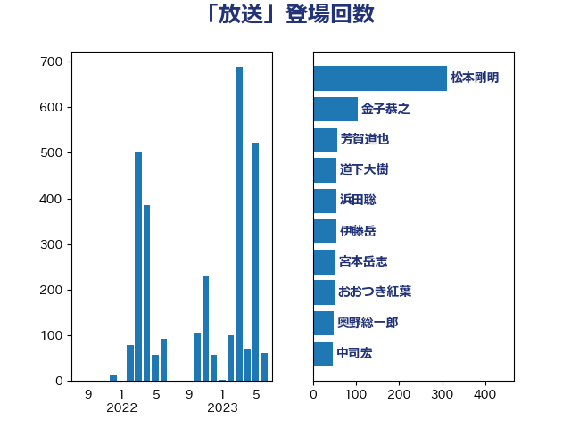

単語「放送」

| 松本剛明 | 自由民主党 | 311 回 |
| 金子恭之 | 自由民主党 | 105 回 |
| 芳賀道也 | 国民民主党 | 56 回 |
| 道下大樹 | 立憲民主党 | 55 回 |
| 浜田聡 | NHK党 | 55 回 |
| 伊藤岳 | 日本共産党 | 55 回 |
| 宮本岳志 | 日本共産党 | 52 回 |
| おおつき紅葉 | 立憲民主党 | 50 回 |
| 奥野総一郎 | 立憲民主党 | 48 回 |
| 中司宏 | 日本維新の会 | 47 回 |
| 新藤義孝 | 自由民主党 | 46 回 |
| 輿水恵一 | 公明党 | 42 回 |
| 市村浩一郎 | 日本維新の会 | 39 回 |
| 北側一雄 | 公明党 | 36 回 |
| 古賀之士 | 立憲民主党 | 32 回 |
| 西岡秀子 | 国民民主党 | 30 回 |
| 小沢雅仁 | 立憲民主党 | 30 回 |
| 赤嶺政賢 | 日本共産党 | 28 回 |
| 沢田良 | 日本維新の会 | 27 回 |
| 鈴木敦 | 国民民主党 | 26 回 |
| 藤井比早之 | 自由民主党 | 26 回 |
| 鈴木庸介 | 立憲民主党 | 25 回 |
| 高市早苗 | 自由民主党 | 23 回 |
| 神谷裕 | 立憲民主党 | 21 回 |
| 守島正 | 日本維新の会 | 21 回 |
| 柳ヶ瀬裕文 | 日本維新の会 | 20 回 |
| 階猛 | 立憲民主党 | 19 回 |
| 三木圭恵 | 日本維新の会 | 19 回 |
| 岡本あき子 | 立憲民主党 | 17 回 |
| 小西洋之 | 立憲民主党 | 17 回 |
| 三浦靖 | 自由民主党 | 17 回 |
| 和田有一朗 | 日本維新の会 | 16 回 |
| 美延映夫 | 日本維新の会 | 15 回 |
| 田村智子 | 日本共産党 | 15 回 |
| 杉尾秀哉 | 立憲民主党 | 15 回 |
| 塩村あやか | 立憲民主党 | 14 回 |
| 音喜多駿 | 日本維新の会 | 13 回 |
| 伊東信久 | 日本維新の会 | 13 回 |
| 中西祐介 | 自由民主党 | 13 回 |
| 谷田川元 | 立憲民主党 | 12 回 |
| 西田実仁 | 公明党 | 12 回 |
| 吉川元 | 立憲民主党 | 12 回 |
| 齊藤健一郎 | 無所属 | 11 回 |
| 竹詰仁 | 国民民主党 | 11 回 |
| 滝波宏文 | 自由民主党 | 11 回 |
| 森山浩行 | 立憲民主党 | 11 回 |
| 寺田稔 | 自由民主党 | 11 回 |
| 國重徹 | 公明党 | 11 回 |
| 保岡宏武 | 自由民主党 | 11 回 |
| 藤巻健太 | 日本維新の会 | 10 回 |
| 堀井巌 | 自由民主党 | 10 回 |
| 片山大介 | 日本維新の会 | 9 回 |
| 林芳正 | 自由民主党 | 9 回 |
| 杉田水脈 | 自由民主党 | 9 回 |
| 岸田文雄 | 自由民主党 | 9 回 |
| 浜地雅一 | 公明党 | 8 回 |
| 山下貴司 | 自由民主党 | 8 回 |
| 阿部弘樹 | 日本維新の会 | 7 回 |
| 湯原俊二 | 立憲民主党 | 7 回 |
| 柴山昌彦 | 自由民主党 | 7 回 |
| 山本博司 | 公明党 | 7 回 |
| 中西健治 | 自由民主党 | 7 回 |
| 中条きよし | 日本維新の会 | 7 回 |
| 石川香織 | 立憲民主党 | 6 回 |
| 浮島智子 | 公明党 | 6 回 |
| 柘植芳文 | 自由民主党 | 6 回 |
| 小野泰輔 | 日本維新の会 | 6 回 |
| 中川正春 | 立憲民主党 | 6 回 |
| 渡辺孝一 | 自由民主党 | 5 回 |
| 渡辺周 | 立憲民主党 | 5 回 |
| 浜田靖一 | 自由民主党 | 5 回 |
| 江島潔 | 自由民主党 | 5 回 |
| 松下新平 | 自由民主党 | 5 回 |
| 山添拓 | 日本共産党 | 5 回 |
| 小野田紀美 | 自由民主党 | 5 回 |
| 城井崇 | 立憲民主党 | 5 回 |
| 北神圭朗 | 無所属 | 5 回 |
| 中川康洋 | 公明党 | 5 回 |
| 足立康史 | 日本維新の会 | 4 回 |
| 河野義博 | 公明党 | 4 回 |
| 松野博一 | 自由民主党 | 4 回 |
| 岸真紀子 | 立憲民主党 | 4 回 |
| 和田政宗 | 自由民主党 | 4 回 |
| 吉良よし子 | 日本共産党 | 4 回 |
| 赤羽一嘉 | 公明党 | 3 回 |
| 萩生田光一 | 自由民主党 | 3 回 |
| 福山哲郎 | 立憲民主党 | 3 回 |
| 神田憲次 | 自由民主党 | 3 回 |
| 玉木雄一郎 | 国民民主党 | 3 回 |
| 片山さつき | 自由民主党 | 3 回 |
| 梅村みずほ | 日本維新の会 | 3 回 |
| 新垣邦男 | 立憲民主党 | 3 回 |
| 井上哲士 | 日本共産党 | 3 回 |
| 高木啓 | 自由民主党 | 2 回 |
| 青山繁晴 | 自由民主党 | 2 回 |
| 長谷川英晴 | 自由民主党 | 2 回 |
| 野田聖子 | 自由民主党 | 2 回 |
| 赤池誠章 | 自由民主党 | 2 回 |
| 落合貴之 | 立憲民主党 | 2 回 |
| 船田元 | 自由民主党 | 2 回 |
| 秋葉賢也 | 自由民主党 | 2 回 |
| 福島伸享 | 無所属 | 2 回 |
| 瀬戸隆一 | 自由民主党 | 2 回 |
| 漆間譲司 | 日本維新の会 | 2 回 |
| 浅田均 | 日本維新の会 | 2 回 |
| 水岡俊一 | 立憲民主党 | 2 回 |
| 柴田巧 | 日本維新の会 | 2 回 |
| 東徹 | 日本維新の会 | 2 回 |
| 杉本和巳 | 日本維新の会 | 2 回 |
| 末次精一 | 立憲民主党 | 2 回 |
| 有村治子 | 自由民主党 | 2 回 |
| 斎藤洋明 | 自由民主党 | 2 回 |
| 国光あやの | 自由民主党 | 2 回 |
| 勝部賢志 | 立憲民主党 | 2 回 |
| 伊藤孝恵 | 国民民主党 | 2 回 |
| 井坂信彦 | 立憲民主党 | 2 回 |
| 中川貴元 | 自由民主党 | 2 回 |
| 中川宏昌 | 公明党 | 2 回 |
| 上田清司 | 国民民主党 | 2 回 |
| 上川陽子 | 自由民主党 | 2 回 |
| 高木宏壽 | 自由民主党 | 1 回 |
| 青山大人 | 立憲民主党 | 1 回 |
| 長峯誠 | 自由民主党 | 1 回 |
| 鎌田さゆり | 立憲民主党 | 1 回 |
| 鈴木貴子 | 自由民主党 | 1 回 |
| 野田国義 | 立憲民主党 | 1 回 |
| 谷公一 | 自由民主党 | 1 回 |
| 西銘恒三郎 | 自由民主党 | 1 回 |
| 西村康稔 | 自由民主党 | 1 回 |
| 若松謙維 | 公明党 | 1 回 |
| 羽田次郎 | 立憲民主党 | 1 回 |
| 笠井亮 | 日本共産党 | 1 回 |
| 穀田恵二 | 日本共産党 | 1 回 |
| 石橋通宏 | 立憲民主党 | 1 回 |
| 石川博崇 | 公明党 | 1 回 |
| 田畑裕明 | 自由民主党 | 1 回 |
| 田村まみ | 国民民主党 | 1 回 |
| 田中昌史 | 自由民主党 | 1 回 |
| 深澤陽一 | 自由民主党 | 1 回 |
| 浜口誠 | 国民民主党 | 1 回 |
| 泉健太 | 立憲民主党 | 1 回 |
| 河野太郎 | 自由民主党 | 1 回 |
| 河西宏一 | 公明党 | 1 回 |
| 横沢高徳 | 立憲民主党 | 1 回 |
| 村田享子 | 立憲民主党 | 1 回 |
| 本田太郎 | 自由民主党 | 1 回 |
| 本庄知史 | 立憲民主党 | 1 回 |
| 斎藤アレックス | 国民民主党 | 1 回 |
| 岩谷良平 | 日本維新の会 | 1 回 |
| 山際大志郎 | 自由民主党 | 1 回 |
| 山田勝彦 | 立憲民主党 | 1 回 |
| 山下芳生 | 日本共産党 | 1 回 |
| 尾身朝子 | 自由民主党 | 1 回 |
| 小熊慎司 | 立憲民主党 | 1 回 |
| 小森卓郎 | 自由民主党 | 1 回 |
| 小林鷹之 | 自由民主党 | 1 回 |
| 小川淳也 | 立憲民主党 | 1 回 |
| 小宮山泰子 | 立憲民主党 | 1 回 |
| 宮路拓馬 | 自由民主党 | 1 回 |
| 奥下剛光 | 日本維新の会 | 1 回 |
| 大島九州男 | れいわ新選組 | 1 回 |
| 塩田博昭 | 公明党 | 1 回 |
| 塩川鉄也 | 日本共産党 | 1 回 |
| 堀内詔子 | 自由民主党 | 1 回 |
| 和田義明 | 自由民主党 | 1 回 |
| 吉田宣弘 | 公明党 | 1 回 |
| 吉田はるみ | 立憲民主党 | 1 回 |
| 吉田とも代 | 日本維新の会 | 1 回 |
| 古賀千景 | 立憲民主党 | 1 回 |
| 古川元久 | 国民民主党 | 1 回 |
| 務台俊介 | 自由民主党 | 1 回 |
| 加藤勝信 | 自由民主党 | 1 回 |
| 加田裕之 | 自由民主党 | 1 回 |
| 五十嵐清 | 自由民主党 | 1 回 |
| 中川郁子 | 自由民主党 | 1 回 |
| 下野六太 | 公明党 | 1 回 |
| 上月良祐 | 自由民主党 | 1 回 |
| 一谷勇一郎 | 日本維新の会 | 1 回 |